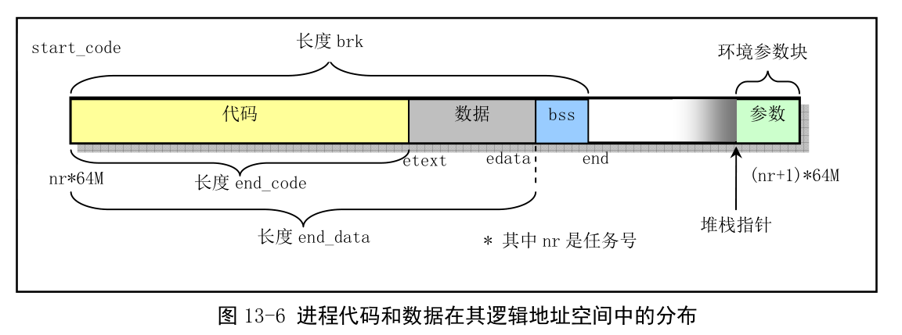

8. 打印进程地址转换过程¶
8.1. 实验目的¶
深入理解操作系统的段、页式内存管理，深入理解段表、页表、逻辑地址、线性地址、物理地址等概念；
实践段、页式内存管理的地址映射过程；
编程打印特定进程地址转换过程。
8.2. 实验内容¶
本次实验的基本内容是：
本实验在地址映射与共享实验的基础上，需要增加实现一个系统调用，使得你可以观察两个通过共享内存（ shmget , shmat ）通信的进程的内存共享情况。
例如，你可以实现以下系统调用：
int debug_paging(pid_t pid, void *address, const char *logPath);
当 address 为 NULL 的时候，该系统调用将会打印 pid 进程所有正在使用的页目录项和页表项。否则只输出 address 对应的页地址转换过程。当 logPath 为 NULL 打印输出为标准输出，否则为 logPath 对应的文本文件。
例如，对于以下测试程序：
/* test.c */
#define __LIBRARY__
#include <stdio.h>
#include <stdlib.h>
#include <sys/types.h>
#include <unistd.h>
_syscall3(int, debug_paging, pid_t, pid, void *, address, const char *, logPath);
int i = 0x12345678;
int main(void)
{
printf("The logical/virtual address of i is 0x%08x\n", &i);
fflush(stdout);
debug_paging(getpid(), &i, NULL);
debug_paging(getpid(), NULL, "/usr/var/paging.log");
return 0;
}
输出可以为：
图1. Demo
又比如，对于地址映射与共享实验，我们可以在 producer.c 调用 p = shmat(shmid) 后使用：
debug_paging(getpid(), p, "/usr/var/paging.log");
debug_paging(getpid(), NULL, "/usr/var/paging.log");
并在 consumer.c 调用 p = shmat(shmid) 后使用：
debug_paging(getpid(), NULL, "/usr/var/paging.log");
来观察和验证共享内存页的情况，输出可以为：
图2. Demo
可以看到，两个进程共享的内存页是 0xFA9000 。
8.3. 实验报告¶
完成实验后，在实验报告中回答如下问题：
页表中正在使用的页表项是连续的吗？这体现了分页的什么优点？
你觉的分段是必要的吗？现在的
Linux (x86-64)是怎么处理分段的？
8.3.1. 评分标准¶
输出能够反映内存共享情况，80%
实验报告，20%
8.4. 实验提示¶
《注释》中的 4.3 和 4.4 节描述了 8086 下的分段和分页机制，第 13 章讲解了 Linux 0.11 下的内存管理（分段和分页管理）和分配机制，值得参考。
例如页转换和地址分配：

为了更方便的向文件或者终端格式化输出，你可以在 /kernel/printk.c 中实现一个 fprintk ：
static char logbuf[1024];
int fprintk(int fd, const char *fmt, ...)
{
va_list args;
int count;
struct file * file;
struct m_inode * inode;
va_start(args, fmt);
count=vsprintf(logbuf, fmt, args);
va_end(args);
if (fd < 3)
{
__asm__("push %%fs\n\t"
"push %%ds\n\t"
"pop %%fs\n\t"
"pushl %0\n\t"
"pushl $logbuf\n\t"
"pushl %1\n\t"
"call sys_write\n\t"
"addl $8,%%esp\n\t"
"popl %0\n\t"
"pop %%fs"
::"r" (count),"r" (fd):"ax","cx","dx");
}
else
{
if (!(file=current->filp[fd]))
return 0;
inode=file->f_inode;
__asm__("push %%fs\n\t"
"push %%ds\n\t"
"pop %%fs\n\t"
"pushl %0\n\t"
"pushl $logbuf\n\t"
"pushl %1\n\t"
"pushl %2\n\t"
"call file_write\n\t"
"addl $12,%%esp\n\t"
"popl %0\n\t"
"pop %%fs"
::"r" (count),"r" (file),"r" (inode):"ax","cx","dx");
}
return count;
}
此外，别忘了在 /include/linux/kernel.h 中添加声明：
int fprintk(int fd, const char *fmt, ...);
由于我们是在内核中对页表进行输出处理，所以使用 系统调用 的时候别忘了加上 sys ，例如 sys_open 和 sys_close 。
最后，无论你是在 /kernel/ 还是 /mm/ 添加了系统调用的实现文件，记得修改对应的 Makefile 文件。